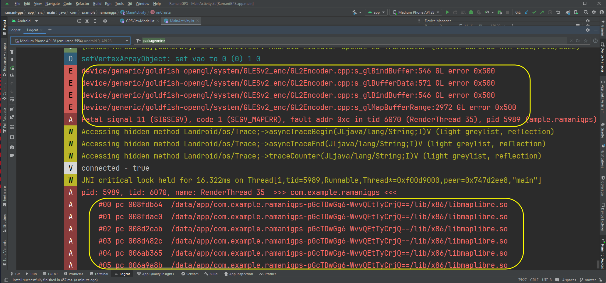

Unfortunately there are one or two incompatibility issues between MapLibre/Ramani and the Android emulator, which have only come to light due to the wide range of PCs used by you all in this module. These are described here along with solutions.
Recreating Style.Builder objects (objects used to specify and build the map style) when a composable recomposes can sometimes lead to unpredictable behaviour including crashes, or the map's location and zoom level not being set correctly. This can be avoided by ensuring that you declare your Style.Builder as an attribute of your activity, so that it's initialised only once, rather than on every recompose. For example:
class MyActivity: ComponentActivity() {
val styleBuilder = Style.Builder.fromUri("https://tiles.openfreemap.org/styles/bright")
// ....
}
You can then pass styleBuilder into any composable which needs it as a parameter.
Separate to the above issue, unfortunately on some machines the emulator appears to crash when displaying MapLibre maps (whether standard MapLibre or Ramani Maps). This will be referred to as the OpenGL Crash as it appears to be something to do with OpenGL (graphics rendering library). See below, the highlighted parts show the key symptoms of this crash:
This only appears to happen on certain devices and is likely to be due to graphics card incompatibilities with the OpenGL rendering system running on the virtual device. The following appear to resolve the problem, so try all these:
OpenGL ES API level to Renderer maximum. As indicated, you then need to shutdown the device and re-launch it again.
osmdroid.In all cases I have seen so far, one or more of the above measures has been enough to get Ramani Maps working on an emulator. However in case it still does not work, you can use osmdroid as an alternative. Please see here for more details.